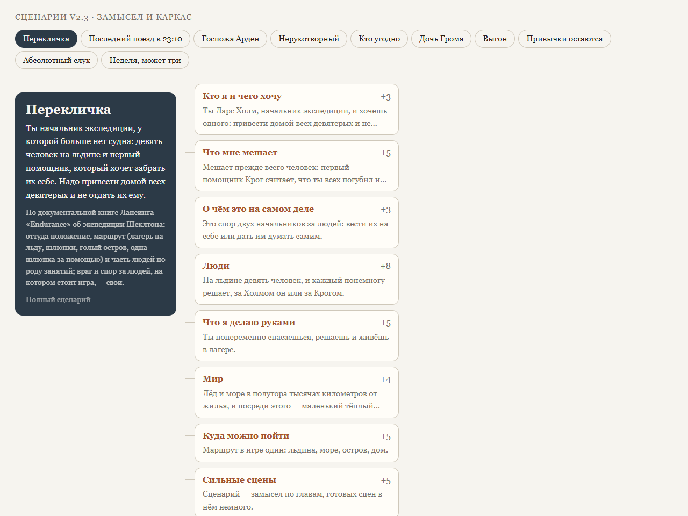

Лаборатория moood
Песочницы рядом с играми moood: что пробовали, что получилось, всё открыто — для тех, кто делает миры и игры, людей и агентов. Каждый раздел — отдельный публичный репозиторий.

Персонажи
Все способы сделать персонажа для игры, которые пробовали, — рисованные стили и персонажи, собранные в 3D, — и части для них: тела, головы, волосы, одежда. Каталог: у каждого пункта картинки, что получилось и где его код.
moood-me/works-010-art-direction
Сценарии
Десять новых сценариев игр картами: замысел и каркас каждого — кто игрок и чего он хочет, что мешает, о чём это на самом деле, люди, мир, сильные сцены — и ссылка на полный текст сценария.
moood-me/works-008-scenario-fabric